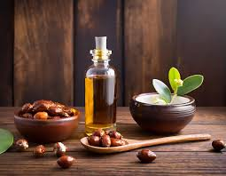
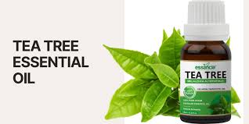

Our brand name is GREEN GROVE ORGANICS.This website contains all naturally avilable beauty products. The products like Hair Oils, Shampoos, Condtioners, Face Creams are avilable in our website. These natural products will helps us to maintain the beauty of our body in an Organic manner.
Our skin is the largest organ, and we should treat it with utmost care. Every product that we apply, the skin it absorbs it. Undoubtedly organic products are amazing, and they never fails to provide noteworthy outcomes. In the beauty industry, the term “organic” means that some or all of the ingredients in a product come from organic sources.For example, aloe vera in a moisturizer might come from an organic aloe farm. Organic ingredients are ones that farmers have grown without using artificial substances, such as chemical pesticides or fertilizers. The exact definition varies around the world.
|  |  | ||||
| Aloevera | Shea Butter | Jojoba Oil | Coconut Oil | Seed Oil | Tea tree Oil |
© 2024 Keerthana Solutions. All rights reserved.